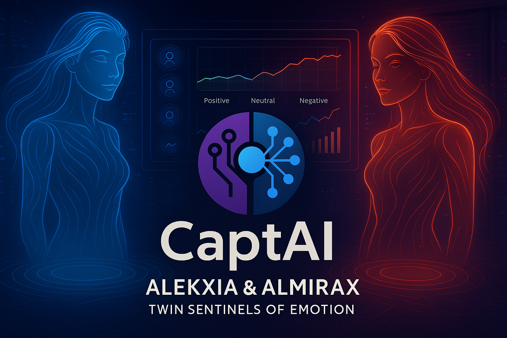

My Portfolio of Intelligent Solutions
A showcase of AI/ML and LLM projects, from concept to deployment.

CaptAI
Developed a robust sentiment analysis model for movie reviews, achieving 82% accuracy. Deployed as an interactive web app.
LLM-Powered Chatbot
Built a conversational AI chatbot using RAG architecture for domain-specific Q&A.
Image Classification with PyTorch
Implemented a CNN for image classification on a custom dataset, showcasing model training and evaluation.